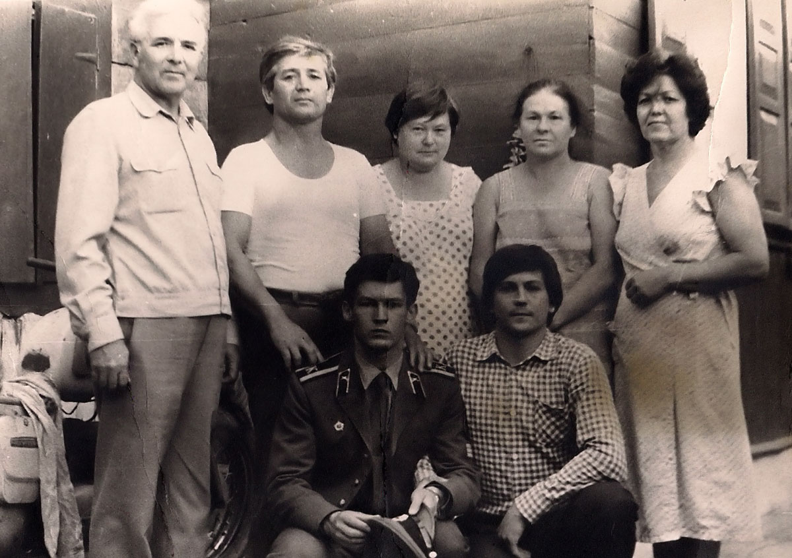

Автобиография
Корниенко С.И.
Я, Корниенко Семён Иванович, родился 3 августа 1928 года в городе Бутурлиновка Воронежской области в семье рабочего. У моих родителей родилось шестеро детей – 3 мальчика и 3 девочки. Я оказался первенцем. Две девочки умерли в младенческом возрасте в 1933 и в 1942 годах.
Мой отец, Корниенко Иван Андреевич был в своей семье шестым, самым младшим по возрасту (1904 года рождения). У него было 4 брата и одна сестра. Моя мать Корниенко Ефросинья Никифоровна (Сорокина) 1908 года рождения в своей семье также была шестой по старшинству, у неё было 2 брата и 4 сестры, одна из которых была младше неё.
Мой отец 1904 года рождения к десятилетнему возрасту, к началу I мировой войны в 1914 году, успел закончить 4 класса церковно-приходской школы (ЦПШ), а затем, подростком, стал помогать старшим братьям вести хозяйство. Их отец (мой дедушка Андрей) погиб в 1908 году, когда моему отцу было 4 года, а семья была большая, нужны были рабочие руки. По тем временам, да и позже, он считался грамотным, хорошо читал, писал, знал арифметику, интересовался политикой, читал газеты.
Моя мать, 1908 года рождения, была до замужества неграмотной. Во время её детства была война, потом революция, потом гражданская война, девочек в школе не обучали. Она выучилась читать и писать, когда у неё уже было двое детей. В стране была организована система ликбеза (ликвидация безграмотности), в которой она проучилась около года, пока не начался голод 1932-1933 гг. Потом она самостоятельно освоила чтение, письмо, читала много книг.
В Бутурлиновке мы жили у дедушки Сорокина Никифора в большом бревенчатом доме, построенном для большой семьи. При доме был большой двор, много домашнего скота: лошади, коровы, овцы, козы, свиньи, разнообразная птица. Во время коллективизации дедушка весь скот, кроме птицы, сдал в колхоз, и сам стал колхозником. Во время голода 1932-1933 годов было продано всё имущество, мебель, одежда, а также отпилены от огромного деревянного дома поочерёдно несколько нежилых комнат и продано на дрова. Это помогло выжить.
Мой дедушка Никифор был грамотным на уровне начальной школы, умел писать и свободно читал псалтырь и тексты из Библии, вёл патриархальный образ жизни, никогда не пил вино, не курил, не сквернословил. Бабушка Марья не умела читать и писать, но была хорошей работящей чистоплотной хозяйкой. После голода 1933 года их забрала к себе на постоянное жительство старшая сестра моей матери тётя Муся, которая жила в городе Лосиноостровск вблизи Москвы. Здесь же и умерли и похоронены дедушка в 1940 году, а бабушка в 1941 году за месяц до начала войны. В Лосиноостровске у тёти Муси в 1936-1937 годах жил мой младший брат Николай, и несколько месяцев жила моя мать с младшей сестрой Валентиной. Я также прожил у неё лето 1939г. Здесь, в пруду я научился плавать.
Мой отец во время голода уехал на заработки сначала в Харьков, а затем в Батайск, куда ещё раньше переехали его старшая сестра и старший брат Михаил с семьями.
Летом 1933 года мы с мамой и младшим братом Николаем 1930 года рождения переехали к отцу в Батайск, который тогда ещё был рабочим посёлком. Здесь людям выдавали хлебные карточки, можно было купить хлеб, и жизнь была более обеспеченной.
В Батайске мой отец и его старший брат Михаил Андреевич работали в сапожной мастерской в кирпичном одноэтажном здании на улице Азовской, напротив ныне поставленного памятника Андрею Первозванному. Заработная плата отца составляла около 600 рублей в месяц. В то время хлеб чёрный стоил 90 копеек за килограмм, хлеб серый – 1р.50коп, сахар рафинад в конусообразных бумажных пакетах «головка сахару» – 3р.80коп. за 1 кг, сахар-песок – 3р.50коп, конфеты карамель - подушечки стоили 3р.50коп, бутылка водки – 6р.5коп. и т.д. Все эти цены я знал хорошо, так как, начиная с 5-6 летнего возраста, всегда ходил за хлебом и продуктами, сначала по карточкам, а потом и в свободной торговле.
Жили мы у тёти Фени, старшей сестры отца, во дворе в маленьком сарайчике размером примерно 3х3 метра, переделанном под жильё. В нём помещалась 1 кровать, 1 стол, печка. Под потолком висела колыбелька, в которой сначала качали родившуюся в январе 1936 года сестру Валю, а потом и братишку Юру, родившегося в июне 1938 года. Жили мы крайне бедно, у нас с братом Николаем была одна пара ботинок на двоих, из-за чего мы скандалили, если хотели идти гулять. Все дети спали на земляном полу на общей подстилке и укрывались общим покрывалом и верхней одеждой. Чтоб мороз с улицы не дул прямо в дверь, отец пристроил коридорчик, в котором зимой замерзала вода в ведре.
Выполняя поручения по покупке продуктов, я узнал, где находятся газетные киоски, покупал там тонкие школьные тетради стоимостью 2 коп, на которых тогда печатались стихи А.С.Пушкина и других поэтов, которые я читал и выучивал наизусть. Это были «Песнь о Вещем Олеге», «У Лукоморья», «Бесы», «Зимняя дорога», отрывки из поэм, которые я помню до сих пор. Читал я не только днём, но и ночью или при хорошей полной Луне, или под столом при керосиновой лампе с прикрученным фитилём, за что меня часто ругали родители. Особенно любил читать сказки, книги о путешествиях и приключениях разных путешественников и мореходов.
В 1936 году я поступил учиться в 1й класс школы №11, она была четырёхлетней, и поэтому в 5й класс я перешёл учиться в железнодорожную школу №7 в 1940 году. В этой школе я закончил 5й класс в 1941 году. Учёба мне давалась легко, хотя из-за бедности нашей семьи у меня никогда не было своих учебников. Учился я хорошо, и во всех начальных классах, включая и 5й класс, меня награждали похвальными грамотами. Читать я научился ещё в шестилетнем возрасте, был записан и брал книги в нескольких библиотеках, читал малограмотным взрослым газеты. В 3, 4, и 5 классах меня приглашали в качестве репетитора по русскому языку, математике и другим предметам к моим одноклассникам, которым учёба давалась трудно.
С начала войны в июне 1941 года отца неоднократно вызывали в военкомат для призыва в армию, но каждый раз военком отпускал отца «до особого», так как у него было четверо маленьких детей, и жена была беременна пятым. Поэтому я бросил учёбу в 6м классе и 1 октября 1941 года устроился к отцу на работу в артель «10 лет промкооперации» и получил рабочую продуктовую карточку. На рабочую карточку выдавали 500г хлеба, а на карточку иждивенца – 300г.
Война всё приближалась к нашему городу и отца взяли на фронт в марте 1942 года, откуда он, как и его старший брат Михаил Андреевич, не вернулись. Их имена навечно записаны в списки батайчан, погибших при защите Родины от немецких захватчиков. Во время оккупации я нигде не работал, мать прятала меня от полицаев, чтоб не угнали на работу в Германию.
Уходя на фронт, отец дал мне наказ: «Береги детей». Этот наказ стал основой, смыслом всей моей жизни во всё время проживания на оккупированной территории с июля 1942 по февраль 1943 года, а также и далее, пока все наши дети подросли и повзрослели. Было мне в ту пору тринадцать с половиной лет, а главный и единственный кормилец семьи был призван в армию, на войну.
В семье были мать и пятеро детей, включая меня, но не было никаких средств существования, ни денег, ни продуктов питания, ни каких-либо ценных вещей для продажи или обмена на продукты. Поэтому моя мать, используя имевшуюся в доме старую швейную машинку «Зингер» стала перешивать и шить из старья, из закупаемых тканей и продавать на рынке предметы детской и женской одежды. Она же подсказала мне и помогла освоить отцовскую специальность по ремонту и изготовлению ботинок, тапочек, по подшивке валенок и сидела рядом со мной, когда я работал ночами, подсказывая, что и как делать. Когда я освоил эту работу, мы стали вместе готовить обувь и одежду для продажи и обмена на продукты. В течение 2-3 недель мы всё заготавливали, а потом она, с женщинами, соседками, уезжали на попутных машинах или в порожних вагонах грузовых поездов в села и деревни Краснодарского края, а потом и на Украину. В деревнях меняла вещи на продукты кукурузу, пшеницу, пшено, муку, семечки подсолнечника, картошку, сало, и привозила всё это домой, иногда по 1,5-2 мешка, а то и более. В это время мы приобрели, как и многие другие, ручную мельницу, сделанную из насечённой трубы, кожуха и ручки. Дома мы мололи зерно на муку и крупу, потом варили супы, каши, пекли блины. Я научился работать на швейной машинке, младший брат Николай во всём мне помогал. Таким образом, нам удалось сохранить жизнь, но умерла моя младшая сестрёнка Нина во время очередной бомбёжки, ей ещё не было и годика. Нам было жалко её, обидно, что мы её не сохранили, и мы плакали.
В своих частых поездках моя мама Ефросинья Никифоровна, иногда рискуя жизнью и всегда рискуя здоровьем, добиралась со своим грузом, подлежащим обмену на продукты, до дальних сёл и деревень, где у населения были ещё продукты, и была ещё нужда в наших вещах и поделках. Там производился обмен. И, нагруженная сумками, мешочками, шла она от дома к дому дальше, помня об оставленных дома голодных детях. Там же и питалась, чем придётся, и ночевала у чужих людей. Таким же образом вели себя многие женщины.
Иногда её не было дома по 2-3 недели, а один раз даже целый месяц. Мы дома беспокоились о ней, продолжали заготавливать материалы для её следующей поездки. Помогал мне Николай, а к концу войны, и младшая сестра Валя 1936 года рождения.
Вале к концу войны исполнилось 9 лет. Она научилась готовить еду и занималась по хозяйству, начала учиться в школе.
После войны Николай поступил в ремесленное училище в группу слесарей по ремонту паровозов, так как он успел до начала войны окончить только 3 класса в школе. Но он учился хорошо, и был переведён в группу помощников машиниста паровоза. Эту группу выпустили в конце 1948 года, и она заменила работников, уходящих в армию.
Наш младший брат Юра 1938 года рождения, которому к началу войны было 3 года, к концу войны подрос, старался тоже чем-то помочь, ходил занимать очереди за хлебом, стоял в очередях, покупал хлеб и другие продукты по карточкам, на ручной мельнице молол зерно, ходил по воду, топил печку и т.д.
Мы все старались жить дружно, помня об отце на фронте, и видя перед собой образ матери-труженицы. Именно благодаря её воспитанию все в нашей семье выросли трудолюбивыми, не боящимися трудностей, честными, а в дальнейшем, и грамотными людьми.
А жизнь шла своим чередом. Во время оккупации на рынке шла бойкая торговля. Люди продавали, кто что мог, кто продавал ранее запасённое, кто продавал последнее, в том числе пиджак или рубашку со своего плеча. Немецкие солдаты, расквартированных в городе тыловых частей, торговали ручными и машинными швейными иголками, камешками для зажигалок, бельём, одеждой, видимо награбленной в других местах. В ходу были деньги – советские рубли и немецкие марки, напечатанные специально для оккупированных территорий. 1 марка приравнивалась к 10 советским рублям. Буханка хлеба весом около 1 кг стоила 130-150 рублей, полулитровая баночка ряженки – 10 рублей.
Но в городе шла и другая жизнь. После войны мы узнали, что при отступлении наших войск и массовой эвакуации предприятий в городе были оставлены для подпольной работы в тылу у врага коммунисты и комсомольцы. Это были ничем не приметные люди, которые жили как все. Они внедрялись в создаваемые немцами органы управления городом, проводили разведку военных объектов, передавали через связных необходимые сведения через линию фронта, устраивали диверсии. Наиболее запомнилась огромная диверсия, которая произошла 24-25 октября 1942 года.
Недалеко от нашего места жительства по улице Ленина возле Октябрьской улицы, примерно в 2-3 кварталах от нас, на «ИЗО» последовательно располагались вдоль железной дороги (между железной дорогой и улицей Энгельса) концлагерь советских военнопленных, склад горючего и склад боеприпасов.
Лагерь был в начале улицы Красноармейской. К лагерю военнопленных женщины и дети носили и бросали через колючую проволоку овощи, хлеб. Охранники прогоняли женщин, но не стреляли.
Рядом с лагерем – от начала улицы Октябрьской до начала улицы Советской был расположен огромный склад бочек с бензином, лигроином, керосином. Бочки располагались большими штабелями из нескольких ярусов. Ещё, рядом, от улицы Кооперативной до улицы Колхозной располагались открытые склады с бомбами, снарядами, патронами, минами для миномётов, от мелких патронов до огромных 500-1000 кг бомб, сложенных в ящиках и штабелях. Всё это усиленно охранялось часовыми.
И вот, 24 октября, примерно в 9-10 часов вечера, в вечерней тишине мы услышали рокот мотора маленького самолёта «кукурузника», как тогда говорили, который залетел сюда от линии фронта. Немцы забеспокоились, надели каски, вышли из домов на улицу. В это время с земли, примерно в районе улицы Кооперативной и Энгельса, была пущена белая ракета в сторону складов. Самолёт развернулся и сбросил зажигательные бомбы на склад с горючим. Раздался огромный взрыв бочек с бензином. Затем эти бочки стали взрываться по всему складу и горящими разлетаться во все стороны, попали на склад с бомбами и снарядами. Бомбы, мины, снаряды стали взрываться ящиками, а то и целыми штабелями. Все боеприпасы, и взорвавшиеся, и ещё не взорвавшиеся, стали разлетаться при взрывах в радиусе до 3-5 км, и падать, продолжая гореть, на концлагерь, на немецкие железнодорожные эшелоны, на частные дома, на паровозное и вагонное депо, на колонны немецких грузовых автомашин, запрудивших улицы. И всё это стало гореть и взрываться. Эти взрывы продолжались непрерывно в течение двух суток. Горящие бочки, крупнокалиберные патроны с фосфорной и пороховой начинкой падали на крыши домов, многие из которых были камышовые и соломенные, дома загорались и горели, и тушить их было некому, так как все жители этого района, бросив свои подворья, убежали в другой конец Батайска и в Койсуг, спасая свои жизни.
Нам с мамой и детьми бежать было некуда, и поэтому мы перенесли свои вещи (матрац, 2 подушки, около 10кг кукурузы) в окопчик, вырытый в огороде. Окоп был накрыт досками и засыпан землёй. Мать спряталась туда с детьми от осколков, снарядов и бомб, а я наблюдал за происходящим. Тут я заметил в темноте, что начала загораться камышовая крыша на соседнем домике. И одновременно увидел, что начинавшийся пожар тушит большой палкой мужчина. Как оказалось, это был сосед, ранее призванный в армию, который дезертировал, и прятался дома в погребе. Позже он стал полицаем у немцев и, скорее всего, он же выдал немцам другого соседа, коммуниста, которого сразу же расстреляли. Поэтому мать прятала меня от его глаз, и работать приходилось ночами.
После взрыва складов с боеприпасами многие годы, да и до сих пор, по всему городу валялись не только осколки, но и неразорвавшиеся патроны, снаряды, мины, которые всегда пытались разрядить подростки. Многие при этом погибли или стали инвалидами.
Ещё за 2-3 недели до освобождения Батайска от немцев, в конце января 1943 года на нашей улице, возле немецкой полевой кухни появился покалеченный и помятый немецкий танк. Танкисты с этого танка докладывали немецкому офицеру и рассказывали немецким солдатам, что танк участвовал в бою где-то под Котельниково, что там было много советских танков, что Красная Армия наступает со стороны калмыцких степей и скоро будет здесь. Немцы об этом не знали, считая, что находятся в глубоком тылу. Я почти всё понял в этом разговоре, так как со школы немного знал немецкий язык, рассказал об этом матери и соседкам, и мы все стали ждать скорого прихода наших войск.
В начале февраля у немцев был объявлен траурный день по поводу разгрома их войск под Сталинградом. А 6-7 февраля в Батайск ворвались наши войска, и Батайск был освобождён от оккупантов. Ранним утром солдаты Красной Армии застали немцев врасплох, те стали даже полураздетыми убегать в сторону Койсуга и устья реки Дон, в строну Таганрога, и многие были убиты.
Через несколько дней в Батайск возвратились руководители города, военкомат, эвакуированные ранее предприятия. Были поставлены на учёт подростки. Парни 23-24-25 годов рождения потом были призваны в Красную Армию, а подростки 26-27-28 годов рождения были сформированы в команды для всеобуча военному делу, которому обучали по выходным дням. Военному делу обучался и я.
После недолгого обучения призванных в армию парней, они были сформированы в воинскую часть и отправлены на фронт, который находился в 60 км от Батайска под Таганрогом. В Таганроге немцы имели хорошие укрепления, аэродромы. С этих аэродромов ежедневно, в течение почти 6 месяцев, проводились массированные воздушные налёты с бомбёжками на железнодорожный узел станции Батайск, где на железнодорожных путях остались сотни немецких эшелонов с техникой, оружием, боеприпасами, предметами снабжения войск на Северном Кавказе. Каждый день в 10 и в 16 часов, и ночью около 22 часов на Батайск налетали с бомбёжками от 50 до 200 немецких самолётов, сбрасывали бомбы на станцию и на город. Их налёты отражали несколько десятков зенитных батарей, а ночами и аэростаты.
В боях за высоты по реке Миус и за Таганрог погибло много молодых батайчан и матросов морского десанта. После войны в их память там воздвигнут огромный мраморный памятник в форме якоря корабля.
Для защиты мирной жизни от фашистов были призваны и погибли мои двоюродные братья Михаил Холодов и Василий Сорокин, оба 1920 года рождения. В Ленинграде во время блокады погиб старший брат моего отца Корниенко Пётр Андреевич. В 1943г под Сталинградом погиб отец моей жены Потехин Михаил Григорьевич.
Дядя моей жены Потехин Валентин Григорьевич 1923 года рождения был тяжело ранен на фронте и стал инвалидом. После войны он окончил лесотехнический техникум и долгие годы, до ухода на пенсию, работал главным инженером Картонной фабрики в посёлке Калинино Нижегородской области. В настоящее время он является почётным ветераном Нижегородской области, бессменным председателем поселкового Совета ветеранов Войны и труда. Недавно написал и издал книгу о зарождении посёлка Калинино и создании там картонной фабрики, об участии династии Потехиных в этих делах.
После освобождения Батайска я вновь стал работать в той же организации. В 1944 году окончил 7й класс вечерней школы №7, был принят в комсомол. Во время войны нам часто приходилось убирать обломки разбитых бомбёжками зданий, расчищать от снега железнодорожные пути для пропуска поездов.
В марте 1947г меня с комсомольской путёвкой от ГК ВЛКСМ направили на работу в паровозное депо, где в это время не хватало рабочих. Там я работал кочегаром паровоза, помощником машиниста паровоза до призыва в Советскую Армию в сентябре 1948г.
В промежутках между поездками, а также во время многочисленных субботников все паровозные бригады расчищали завалы, убирали железо от разбитых при бомбёжках паровозов и вагонов, битые кирпичи, стекло, обломки зданий, оставшиеся после войны.
Службу проходил в железнодорожных войсках. Строили вторые железнодорожные пути в Донбассе. После этого в декабре 1948г наш батальон был переброшен на строительство железной дороги Кизел – Пермь. В связи с предстоящим строительством Камской ГЭС мы построили для новой железной дороги мост через реку Чусовая. Потом валили лес, строили казармы, мосты, вручную копали землю и отсыпали насыпи, так как ещё не было необходимой техники. Работал стропальщиком, землекопом, плотником, скреперистом, лаборантом по бетону и т.п. В 1949 году меня избрали секретарём комсомольской организации роты, а в 1950 году приняли в кандидаты ВКП(б) и направили на учёбу в военное училище в город Ярославль.
В 1949 году наша рота обосновалась в построенных своими руками из свежесрубленного леса землянках в районе села Таборы Добрянского района Пермской области. Не было никакой связи, в том числе телефонной, со штабом бригады в Перми. Не было электричества, не было радио, не было газет. Солдаты валили лес, прорубали просеки для будущей железной дороги, топорами и пилами обрабатывали брёвна и строили по тайге «лежнёвку» - деревянную дорогу из толстых брусьев, жгли ветки и сучья в кострах. Работали, в том числе и в мороз -40…-50 градусов.
Сначала солдаты купались в арендованной крестьянской баньке – чёрной изнутри, где помещалось 8-10 человек. Воду грели в деревянной сорокаведёрной бочке, бросая в воду раскалённые в костре валуны, принесённые с берегов местной речки Вильвы. Потом на берегу Вильвы построили просторную баню.
Чтобы занять свободное время солдат по решению комсомольского бюро в каждом взводе выпускались еженедельно боевые листки с описанием трудовых заслуг солдат. Накануне 30й годовщины Комсомола 29 октября 1949 года была организована ротная художественная самодеятельность с привлечением местных деревенских девчат (две учительницы начальных классов и секретарь сельсовета) и позаимствованных в деревне гитар и балалаек. Концерт самодеятельности пришлось показывать ежедневно целую неделю, так как в избу-читальню помещалось не более 30-40 зрителей - солдат и деревенских жителей. Молва о концерте докатилась до дальних заимок за 30-50 км, откуда дедушки привозили на санях своих внучек посмотреть концерт.
Будучи курсантом, в январе 1953 года я женился на студентке Ярославского пединститута Галине Потехиной. После окончания Военно-Железнодорожного училища мне присвоили звание «лейтенант» и направили служить командиром взвода сначала в Карелию, а затем, вместе с отдельной ротой эксплуатации в Эстонию на строительство железной дороги на острове Саарема. Здесь я работал в качестве военно-железнодорожного начальника паровозного и вагонного депо.
Проходя службу и занимаясь строительством железной дороги, эксплуатацией и ремонтом паровозов и вагонов, в 1954 году я поступил на обучение в местную русскую вечернюю школу в 8 класс (Кингисеппской средней школы), и закончил 10 классов в 1956 году с получением аттестата зрелости о среднем образовании.
После окончания пединститута в 1954 году ко мне приехала жена, и в 1955 году у нас в городе Кингисепп родился старший сын Евгений.
В 1956 году нашу воинскую часть перебросили в город Черняховск Калининградской области. Здесь мы строили несколько участков подъездных железнодорожных путей к Калининграду и морскому порту. Здесь в ноябре 1957 года родился наш младший сын Владимир.
В феврале 1959 года я в звании старшего лейтенанта был уволен в запас по болезни и приехал с семьёй в Батайск. В мае 1959г вновь поступил в паровозное депо, работал помощником машиниста паровоза, экстерном сдал экзамен на право управления паровозом, работал машинистом паровоза. В это время начинался переход с паровозной тяги на тепловозную и электровозную тягу поездов. И я поступил на заочное отделение Ростовского железнодорожного техникума по специальности «электротяговое хозяйство». В 1962 году окончил курсы машинистов тепловозов, а в 1963 году, работая машинистом тепловоза, сдал экстерном и получил право управления электровозом и был назначен работать машинистом электровоза.
После демобилизации, приезда в Батайск, поступления на работу в паровозное депо дети наши были устроены в ясли и детский сад, мы с младшим братом Юрием начали строить дом. Дом строился для матери и брата, так как они заготовили для строительства материалы, но так же и для временного проживания моей семьи, пока мне дадут квартиру или я построю себе дом сам. Дом был построен из имевшихся материалов в течение 2х лет. К этому времени относится и снимок нашей семьи в 1961 году.

Фотография семьи Корниенко в 1961 году.
В первом ряду сидят моя мама Ефросинья Никифоровна, наш сын Володя, сват Андрей Галкин, сваха (свекровь моей сестры Валентины), Люда (племянница, дочь Валентины), и я сам. Во втором ряду стоят мой брат Юра, жена моего брата Николая Валентина Ивановна (девичья фамилия Гаранжа), её дочь Лена, брат Николай, сестра Валентина Ивановна, её муж Владимир Андреевич Галкин, моя жена Галина Михайловна.
В августе 1963 года был избран секретарём парткома локомотивного депо. В 1964 году с отличием окончил техникум и поступил на вечернее отделение РИИЖТа по той же специальности. В 1972 года закончил РИИЖТ с отличием и был назначен на должность заместителя начальника депо по эксплуатации.
За время работы секретарём парткома и заместителем начальника депо, локомотивное депо Батайск из небольшого паровозного депо превратилось в современное высоко организованное, технически оснащённое, эстетически оформленное предприятие высокой культуры и производительности труда, которое многократно награждалось переходящими красными знамёнами МПС и Управления СКЖД.
В апреле 1978 года приказом начальника дороги был переведён для работы в Управлении СКЖД на должность старшего инженера по автотормозам, а потом назначен старшим ревизором службы локомотивного хозяйства. Работал по повышению уровня безопасности движения поездов, повышению квалификации локомотивных бригад локомотивных депо железной дороги.
В связи с предстоящим уходом на пенсию по моей личной просьбе с 1 июня 1983 года приказом начальника СКЖД был переведён в локомотивное депо Батайск на должность машиниста тепловоза, где работал до выхода на пенсию в декабре 1994 года.
Сыновья наши Евгений и Владимир получили высшее образование, имеют свои семьи. В настоящее время у нас один внук (тоже окончил ВУЗ), четыре внучки и одна правнучка. Все внуки учатся или работают.
Наш старший сын Евгений после окончания средней школы №9 в городе Батайске поступил учиться в Московский физико-технический институт в 1972 году. После окончания института в 1978 году он был направлен на работу в ЦНИИМаш в городе Калининград (нынче Королёв) Московской области, где проработал много лет. В 1982 году женился на выпускнице МФТИ Коноваловой Ирине Андреевне. Уже замужем, она окончила аспирантуру, защитила диссертацию, стала кандидатом физико-математических наук. В 1983 году у них родился сын Андрей, они получили квартиру, а в 1987 году родилась дочь Сашенька. В настоящее время наш внук Андрей закончил МФТИ, работает. Внучка Сашенька учится на 5 курсе МГУ. В детские годы Андрей и Сашенька окончили музыкальную школу в городе Королёве, в совершенстве владеют компьютерной техникой, пользуются Интернетом.
Сын Евгений работает инженером в одной из крупных московских фирм, связанных с компьютеризацией различных областей производства и экономики в Москве и других городах России. Невестка Ирина Андреевна работает ведущим специалистом в департаменте стандартизации и метрологии РФ.
Наш младший сын Владимир после окончания Батайской железнодорожной школы №16 поступил в Ростовский институт (ныне Университет) сельхозмашиностроения. После окончания института в 1979 году по специальности инженер-механик, он был направлен на работу в город Челябинск на станкостроительный завод. Здесь же через 3 года он женился в 1982 году на Хабибуллиной Римме Хайрулловне, работавшей на этом же заводе. У них родились 3 дочери Юлиана в 1983 году, Эвелина в 1985 году и Алла в 1989 году. Юлиана окончила среднюю школу №16 в Батайске и лицей модной одежды в Ростове-на-Дону. Вышла замуж. В 2002 году у неё родилась дочь Ирочка (наша правнучка). В настоящее время она живёт в Челябинске и работает в одной из коммерческих фирм.
Внучка Эвелина окончила школу и техникум, работает в городской торговле в городе Челябинск. Внучка Алла – студентка института в Челябинске. Юля и Алла в Батайске окончили художественную школу, хорошо рисуют. Эвелина пишет лирические стихи.
Сын Владимир работает инженером-электронщиком на Челябинском тракторном заводе. Невестка Римма работает проводником в фирменных поездах «Урал» назначением Челябинск-Москва.
Сын Володя и все внучки Юля, Эля, Алла свободно владеют компьютером, компьютерной техникой.
Наши внуки Алла, Эля, Саша, Юля, Андрей (фото 1996 года)
{kind=link}
Мой брат Николай Иванович после моего ухода на службу в Советскую Армию работал помощником машиниста на том же паровозе, что и я. С 1949 по 1954 год он служил матросом на Северном Флоте. После демобилизации работал в Воронеже на авиационном заводе. Женился. У него родились дочь Елена в 1957 году и сын Александр в 1962 году. Николай Иванович рано ушёл из жизни. Его дети выросли, получили высшее образование, завели свои семьи. Муж Лены – Москаленко Юрий Александрович работает советником Губернатора в Воронеже, старший сын Андрей окончил Воронежский университет, женат. Дочь Ирочка 1987 года рождения – студентка Воронежского университета. Младший сын Николая Ивановича Александр – предприниматель, его дочь Машенька – студентка Воронежского университета.
Моя сестра Валентина Ивановна Галкина и её дочери Людмила Владимировна 1957 года рождения и Светлана Владимировна 1962 года рождения получили среднее и среднетехническое образование, как и их мать, работают в Ростовской ЦГБ. Сын Людмилы Саша 1987 года рождения только что закончил службу в Российской Армии, не женат. Дочери Светланы Владимировны Катя 1983 года рождения и Таня 1985 года рождения – студентки вузов, работают.
Мой брат Юрий Иванович окончил железнодорожный техникум. Всю жизнь до пенсии работал машинистом электровоза и тепловоза. В настоящее время работает мастером по подготовке кадров для локомотивного депо в профтехучилище города Батайска. Его сын Олег Юрьевич 1964 года рождения закончил в Ростове-на-Дону Высшее военно-артиллерийское училище, получил Высшее военное образование. По выслуге лет в Российской Армии уволен в запас. В настоящее время предприниматель. Его дочь Анна Олеговна 1987 года рождения – студентка вуза, и одновременно работает по выбранной специальности.
55 лет назад, 28 января 1953 года мы с Галиной Михайловной поженились, создали семью. Моя жена родилась 11 февраля 1931 года в Нижегородской области в простой многодетной сельской семье, рано познала труд и домашнюю работу в лесном посёлке им. Калинина, где жила её семья. После окончания средней школы уехала в Ярославль, где поступила в Ярославский педагогический институт, и окончила его в 1954 году.
Все годы совместной жизни она была всегда рядом со мной. И когда я после окончания военного училища служил в железнодорожных войсках, и мы переезжали с места на место. Старшего сына Евгения она родила 10 апреля 1955 года в Эстонии, в городе Кингисепп, когда работала преподавателем средней школы. Через 4 месяца после родов она вышла на работу. И когда она, навещая меня в военном госпитале в городе Черняховск калининградской области со старшим сыном, которого водила за ручку, сразу после посещения госпиталя попала в роддом и родила младшего сына Владимира 28 ноября 1957 года. И помогла мне учиться в вечерней школе в Эстонии, где я получил аттестат зрелости в 1956 году. И после приезда в Батайск, где она работала в локомотивном депо, а потом в школе №12 и №16, дала мне возможность окончить заочный железнодорожный техникум, подготовиться и сдать экзамены на право управления паровозом, тепловозом, электровозом. И создала условия для моего поступления в Ростове-на-Дону в институт инженеров железнодорожного транспорта. Это было 6 лет вечернего обучения. Я окончил институт, когда дети стали уже взрослыми, и получил диплом инженера–электромеханика с отличием. Когда я работал в локомотивном депо и в Управлении Северо-Кавказской железной дороги, она всегда провожала меня, занималась домашним хозяйством, готовила еду, воспитывала детей, а затем и внуков, не щадя своих сил и здоровья.
Работая в школе и на производстве принимала активное участие в общественной жизни, выпускала стенгазету, участвовала в спортивных мероприятиях не только в железнодорожных организациях, но и в городе и в Ростовской области, о чём говорят полученные ею многочисленные почётные грамоты. Она награждена медалью «Ветеран Труда».
Много внимания и сил она вложила в воспитание внуков, которых ежегодно привозили к нам на летние каникулы из Москвы и Челябинска. Галина Михайловна является хорошей и умелой хозяйкой, которая проявляет заботу о своей семье, но может приготовить, накрыть богатый роскошный стол с пирогами и угощением для званых гостей, наших родственников и друзей с их семьями и детьми. Поэтому она пользуется уважением и любовью не только детей и внуков, но и всех наших друзей. Она всегда была и остаётся верным преданным другом.
Я благодарен судьбе за подаренную мне возможность иметь рядом такого верного бескорыстного друга, с которым мы прожили вместе многие годы.
Мои родители были бы рады знать всё это, как от темноты и незнания все их потомки пришли к свету и знаниям.
За время службы в Советской Армии и работы был награждён медалями: «За безупречную службу» 3 степени, «Ветеран труда», «За доблестный труд в Великой Отечественной войне 1941-1945г», «За доблестный труд в ознаменование 100-летия со дня рождения В.И.Ленина», «За активное участие в военно-патриотическом воспитании молодёжи», награждён медалями «40 лет Вооружённых сил СССР» и «70 лет Вооружённых сил СССР». Как участник войны, труженик тыла награждён юбилейными медалями «50 лет победы в Великой Отечественной войне 1941-1945г» и «60 лет Победы в Великой Отечественной войне 1941-1945г». Награждён ведомственными знаками отличия МПС и ЦК профсоюзов «За активное участие в электрификации магистрали Ленинград – Москва – Ростов – Баку», «Победителю социалистического соревнования 1979г», «Ударник коммунистического труда» и другими. Многократно награждался почётными грамотами вышестоящими органами.
Из родственников никто не репрессирован.
К судебной ответственности не привлекался.
10 октября 2007 года
13 января 2008 года, город Москва
Корниенко С.И.
Приложение
Некоторые фото и документы из жизни автора и его семьи

1) 1953-09-25 Мы с Галей и мамой
2) 1953-09 первый выпуск военно-железнодорожного училища.
Ярославль
{kind=link}
3) 1954 выпуск Ярославского Педгогического института
{kind=link}
4) 1954 брат Николай Иванович после службы в ВМФ в Батайске
{kind=link}
{kind=link}

6) 1959-02 Возвращение семьи в Батайск после службы в Черняховске
{kind=link}
8) 1963-08 Юрий Иванович в гостях у брата Николая в Воронеже
{kind=link}
9) 1967 Вова и Олег играют в шахматы
{kind=link}
10) 1973 Выпуск инженеров электромехаников
{kind=link}
{kind=link}
12) 1977 Вова с родителями и бабой Фросей
{kind=link}
13) 1977 Тётя Муся (Одесса) в гостях в Батайске
{kind=link}
{kind=link}
{kind=link}

16) 1984 курсант Олег в гостях у родителей
{kind=link}
{kind=link}
18) 2001-05-09 перед выходом на парад с товарищами по работе
{kind=link}
19) 2001 Встреча ветеранов в библиотеке им. Лермонтова
{kind=link}
20) 2003 юбилей 75 лет. Света, Люда, Валентина, бабушка
и дедушка
{kind=link}
21) 2004-02-15 На поминках Марии Грудиновой с друзьями Волчковыми,
Десятовыми, Грудиновыми
{kind=link}
22) 2004-09-05 с машинистом Петром Руденко
{kind=link}
23) Бабушка Галя в гостях у Жени с Ирой и Сашей
{kind=link}
24) 2005 День рождения у Юрия Ивановича
{kind=link}
25) 2006-05-09 фото с машинистом Подрезовым Михаилом и его
женой Машей
{kind=link}
26) 2006-05-09 у Стены Памяти погибших защитников отечества
в г.Батайск с Грудиновым Я.А.
{kind=link}
27) 2009 Правнучка Ира в гостях у бабушки Гали
{kind=link}
28) 2011 Встреча в библиотеке им. Лермонтова. Стоят руководители
клуба 'Общение' Зоя Ивановна и Зинаида Николаевна
{kind=link}
29) 2016-02-23 Семен, Валентина и Юрий
{kind=link}
30) Галина Михайловна - ветеран труда
{kind=link}
31) 1995-2004 Труженник тыла, ветеран труда, ветеран войны,
ветеран труда Ростовской области
{kind=link}
32) Медали и ведомственные знаки отличия Корниенко С.И.
за безупречную службу и добросовестный труд
{kind=link}
33) 2017 Поздравление с Днём Победы от президента Путина
В.В.
{kind=link}